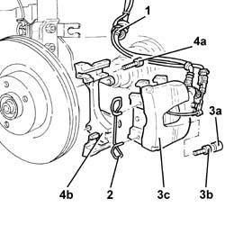
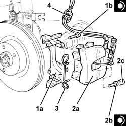

3310A57 FRONT BRAKE CALLIPER BRACKET - R R
- Path
- Procedures > 33 BRAKING SYSTEM > 3310 DISC BRAKES > 3310A FRONT DISC BRAKES > 3310A57 FRONT BRAKE CALLIPER BRACKET - R R
- Kind
- repair procedure (removal / refitting; the operation number is the code)
- Applies to
- engines: 1.8 T.SPARK, 2.0 JTS, 1.9 JTD 16V; all production periods
- Interactive page
- https://sloeber94.github.io/elrnDB-aGt/en/#/125001318
Applies to: engines: 1.8 T.SPARK, 2.0 JTS, 1.9 JTD 16V; all production periods
 Removing
Removing
 Refitting
RefittingPosition the vehicle on the ramp
Proceed with removal
Op. 4450B10 TYRE INFLATION VALVE CAP - REPLACE
1. Release the front brake caliper flexible pipe from the mounting bracket.
2. Remove the clip securing the brake caliper to the bracket.
3. Remove the protective plugs (3a), undo the bolts (3b) and move the front brake caliper (3c) complete with pads away from the bracket.
4. Undo the bolts (4a) and remove the front brake caliper bracket (4b).

Applies to: engines: 1.8 T.SPARK, 2.0 JTS, 1.9 JTD 16V; all production periods
Refitting
Removing1. Place the front brake caliper bracket (1a) back in its housing and fix it tightening the bolts (1b) to the recommended torque.
 | Fastening | Component | Ø | Value (daNm) |
|---|---|---|---|---|
1b | Bolt | FRONT BRAKE CALIPER BRACKET | M12 | (Front steering knuckle side) 11.1 ÷ 12.3 |
2. Place the front brake caliper back in its housing (2a), fix it tightening the bolts (2b) to the recommended torque and fit the protective plugs (2c).
| Fastening | Component | Ø | Value (daNm) |
|---|---|---|---|---|
2b | Bolt | FRONT BRAKE CALIPER ASSEMBLY | M12 | (Bracket side) 11.7 |
3. Refit in its seating the clip securing the brake caliper to the bracket.
4. Fit the front brake caliper flexible pipe to the mounting bracket.

Applies to: engines: 1.8 T.SPARK, 2.0 JTS, 1.9 JTD 16V; all production periods
Proceed with refitting
Op. 4450B10 TYRE INFLATION VALVE CAP - REPLACE.
Remove the car from the ramps.